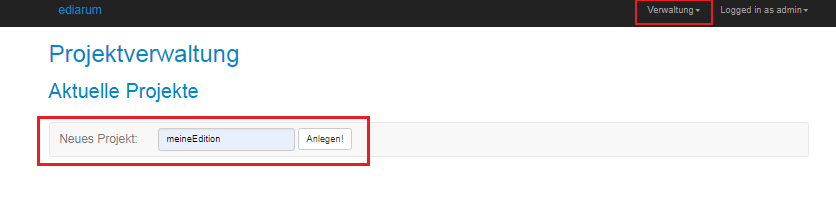
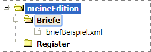

In der Datenbank muss für Ihre Edition ein Projekt mit einer standardisierten
Ablagestruktur und einigen standardisierten Settings vorhanden sein. Um die Standards
automatisiert korrekt anzulegen, benutzen Sie die ediarum.DB-App.
Sie sind im Dashboard Ihrer eXist-db mit Admin-Rechten angemeldet.
-
Öffnen Sie die ediarum.DB-App.
-
Wählen Sie in der App das Menü aus.
-
Schreiben Sie in das Feld Neues Projekt einen
Projektnamen für Ihre Edition und klicken Sie auf
Anlegen!. In der Datenbank wird ein neuer Ordner mit
dem gewählten Namen angelegt.
Den Projektnamen müssen Sie später für die Datenbankanbindung angeben.
Verwenden Sie keine Umlaute, Leer- oder Sonderzeichen!

Die angezeigte Projektliste enthält nun Ihr Projekt. Wenn Sie Ihr
Projekt anklicken, sehen Sie die Ordnerstruktur, in der später die XML-Dateien
Ihrer Edition gespeichert werden.
